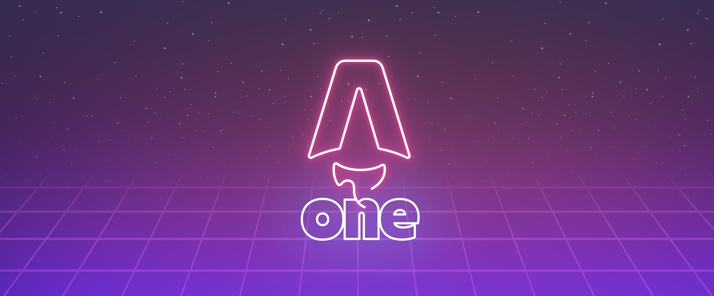

2022-07-01
This is the first post of my new Astro blog.
Written by: Astro Learner

My First Blog Post
Published on: 2022-07-01
Welcome to my new blog about learning Astro! Here, I will share my learning journey as I build a new website.
What I’ve accomplished
- Installing Astro: First, I created a new Astro project and set up my online accounts.
- Making Pages: I then learned how to make pages by creating new .astro files and placing them in the src/pages/ folder.
- Making Blog Posts: This is my first blog post! I now have Astro pages and Markdown posts!
What’s next
I will finish the Astro tutorial, and then keep adding more posts. Watch this space for more to come.